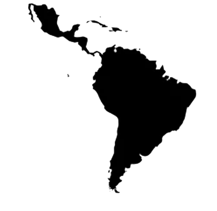
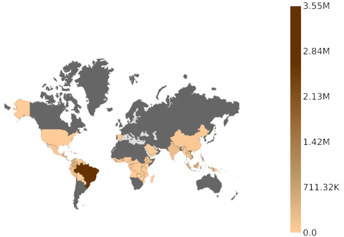
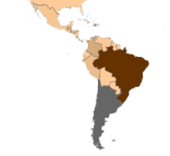
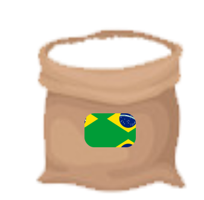
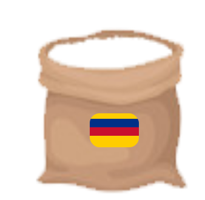
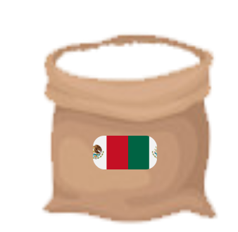
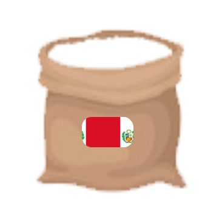

AMÉRICA
LATINA
Reloj

De los 51 países que producen café en el mundo, 11 son Latinoamericanos.


El 60% de la producción mundial de café se genera Latinoamérica
¿Qué país de Latinoamérica crees que es el mayor productor de café?

100%



